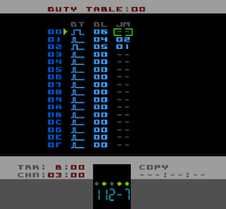

Duty Table Editor Page
Tracks A & B are the NES's two square-wave voices. They both have a Duty setting which sets the pulse width to one of four possible values. The four values (as they relate to the pulse width) are 12.5%, 25%, 50% and 25% (phase inverted). In Pulsar (like LSDJ) these four values are represented by little waveform icons.
In the Instrument definition you have the option of either setting a single, static Duty value (which is depicted by one of four waveform icons) or alternatively you can tell Pulsar you wish the Duty of the Instrument to be controlled by a Duty Table. There is also a Command to set/override the Duty setting of an Instrument, Wxx.
From left-to-right the parameters are:
|
specifies the Duty setting for the Duty Table step. You can't actually assign a number, just change the little waveform icon. |
|
specifies the number of ticks/frames to hold the current Duty for (as specified in DT column). 00 means no delay, FF is the maximum possible delay |
|
tells the Duty Table which step to go to next after the current step has ended (after the specified Delay). A setting of '--' means to just drop through to the next step |
Duty Table Operation
When a Duty Table is assigned to an Instrument, each time a new note is played the Duty Table starts at the first step and normally progresses to the end of the table (step 0F) at which point it loops back to the start and continues.
As you can probably tell from the JM and the DL settings, you can manipulate this flow to pretty much create any pattern of Duty settings you like.
As an example, the Duty Table in the screen-shot above will start on step 00, hold there for 06 ticks, then drop through to step 01. On step 01 a different Duty value is specified and the step is held for 04 ticks. Then the JM 02 command causes a jump to step 02 (though this is not really necessary as the next step after 01 would be 02 anyway). Then on step 02 a different Duty setting is specified and this is held for 05 ticks before jumping back to step 01, thus looping around steps 01/02 until the end of the note.